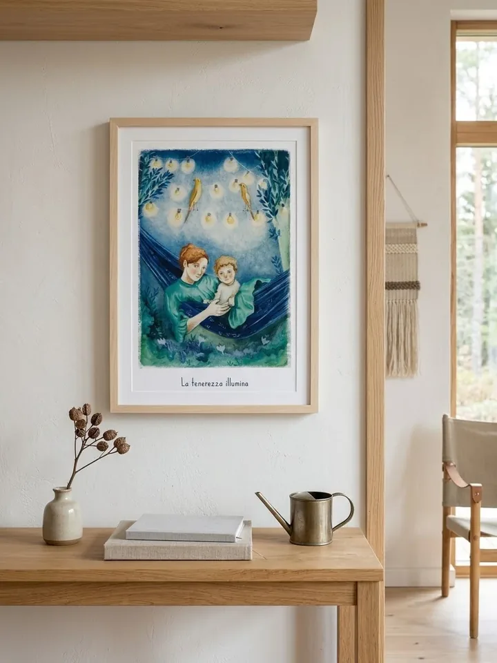
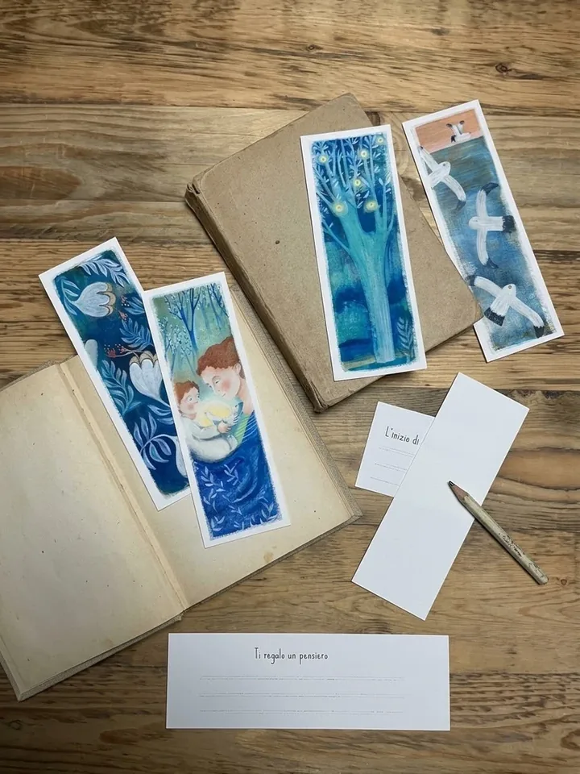

Tutte le collezioni
Tutte le collezioni
Collezione 2 · casa e regalo
Bereshit
Illustrazioni dipinte nei blu e nei verdi, con frasi brevi scritte a mano. Una linea per la casa e per un regalo pensato, già sviluppata in più formati.
- Formati pronti
- poster 30×40, quadretti A4, segnalibri 7×21
- Applicazioni
- stampe, tazze, cartoline, oggettistica
- Pubblico
- adulti, famiglie, idee regalo
- Disponibilità
- licenza o esclusiva




Ti piace Bereshit?
Scrivimi per ricevere i file di prova, le condizioni di licenza o una variante pensata per il vostro catalogo.
Richiedi questa collezione Guarda anche Profumo di sottobosco →